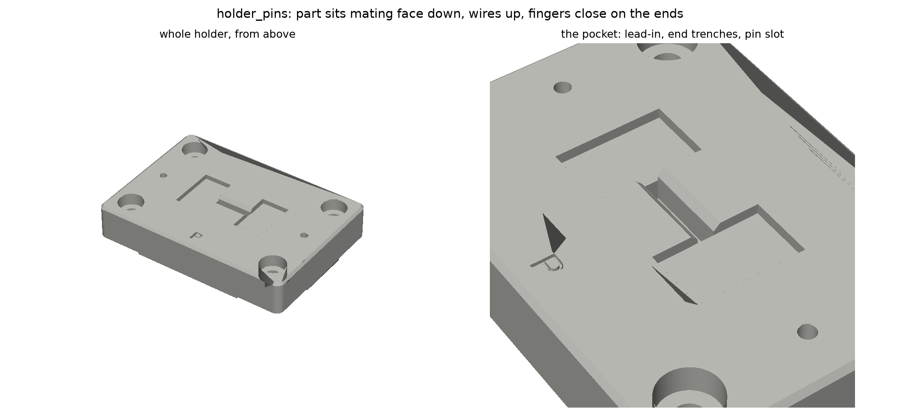
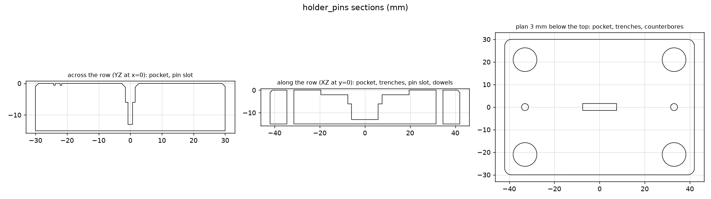
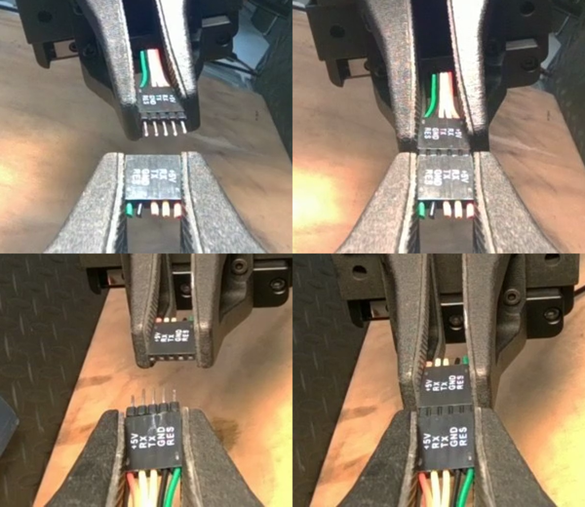

Two holders for the two 5-pin housings
Parametric CadQuery model for Form 4 resin printing. Files in this folder: holder_pins.stl, holder_sockets.stl (and .step for each), coupon.stl, connector_holder.py. One base per part, each 84 by 60 by 15 mm, low and wide so an arm bump cannot tip it, with three ways to fix it to the bench.
holder_pins (label P, left arm's side) and holder_sockets (label S, right arm's side).

What it does
- The part sits mating face down, wires up. In every connect recording the fingers pinch the housing's two end faces, the mating face points out past the fingertips and the wires run back toward the palm. A gripper coming straight down onto this pocket and closing on the end faces produces exactly that grasp; the pose move to the handover pose then turns the wrist, so nothing about the part's orientation in the room matters, only where it sits between the fingers. The earlier design had the part the other way up and would have put the mating face against the palm.
- The pins part rests on its shoulders either side of a blind slot in the pocket floor, so its 6 mm pins hang free and never carry weight. The sockets part has a flat face and rests on the floor directly. The wires point up out of the pocket and sit in the gap between the finger pads, so they need no room in the holder.
- The pocket is 6 mm deep, so 8.5 mm of the housing stands proud; two 2 mm deep trenches at the ends let the finger pads close 2 mm below the top surface. The pad tips then sit 4 mm behind the mating face, which is what the recordings show (4 to 6 mm), and the pads cover about 10 mm of the 14.5 mm housing.
- A 1.2 mm chamfer at the mouth self-centres a housing dropped in slightly off.
- Pocket clearance 0.25 mm per side (loose drop-in). Form 4 Grey resin holds about 0.1 mm, so the fit is set by the number, not the printer.
- Fixing to the bench, three ways that can be combined: four counterbored screw holes in the corners (M5 machine screws into inserts, or #10 wood screws straight into the bench; the head sits 5 mm below the surface so nothing protrudes); two 3 mm dowel holes on the long axis, so with two pins in the bench the holder always returns to the identical spot after removal; four 20 by 20 mm recesses underneath for 3M VHB pads if screws are not allowed on that bench.
- Footprint 84 by 60 mm, 15 mm tall, 1 mm chamfer on the top edges so fingers and arms slide off it. Solid resin, about 75 cm³; on Grey V5 that is roughly 85 g per holder.
The grasp the holder reproduces

Measure before printing
The defaults are a standard 1x5 2.54 mm crimp housing (14.6 by 2.6 by 14.5 mm), which is what the camera frames show. Put calipers on both real housings and set these in the PARTS table at the top of connector_holder.py, then rerun it:
| Parameter | Default | Measure |
|---|---|---|
L | 14.6 mm | length along the five contacts |
W | 2.6 mm | thickness of the single-row housing |
H | 14.5 mm | height of the plastic body, mating face to wire end, without pins |
pin_len, pin_row, pin_t | 6.0, 11.0, 0.64 mm | pins part only: how far the pins stick out, end-to-end span of the five, pin thickness; the slot is 0.8 mm wider each way and 1 mm deeper |
Also check whether either housing has a latch bump or ramp on a broad face. If so, tell me its height; the pocket needs a groove for it or the part will not drop in.
The coupon
coupon.stl is a strip with five pockets at 0.10, 0.175, 0.25, 0.325 and 0.40 mm clearance per side, labelled. Print it first (it is small), drop a housing into each, and pick the tightest one that still drops in freely and comes out without tilting. Set CLEARANCE to that value and print the holder.
Form 4 settings
| Item | Choice | Why |
|---|---|---|
| Resin | Grey V5 or Tough 2000 | Grey for accuracy and a matte, camera-friendly surface; Tough if it will be clamped and knocked |
| Layer height | 50 µm | Pocket walls and chamfer come out clean; 100 µm is fine for the coupon |
| Orientation | Flat on the build platform, pocket up, or tilted 15 to 20 degrees with supports on the underside only | No supports inside the pocket, the trenches or the pin slot. The pin slot is a 1.4 mm wide blind slot; after washing, run a pin or a 1 mm drill through it to clear uncured resin |
| Supports | Auto, touchpoint 0.4 mm, underside only | Keep the top surface and pocket walls support-free |
| Post-process | Wash 10 min, cure 30 min at 60 °C for Grey; Tough per Formlabs table | Uncured resin in the pockets changes the fit; run a pin or the housing through each pocket after curing |
| Colour | Grey, not blue, not black | The bench mat is blue and the housings are black; the holder must contrast with both for the cameras |
Placing it in the cell
- Inside all three cameras' view, reachable by both arms with the wrist cameras looking down at the pockets.
- Pins holder on the left arm's side, sockets holder on the right's, so each arm picks its own part without crossing. Turn each holder so its pocket's long axis lines up with the direction that arm's fingers close in when the wrist points straight down. Being separate, their spacing and angle are free; fix them once and never move them after recording starts.
- Screw it down (wood screws through the counterbores are enough on a wooden bench), or VHB pads in the underside recesses on a mat. Drill the two dowel holes into the bench through the holder the first time; after that the holder can come off and go back without recalibrating anything. Then save a pose
home_pickupwith both grippers open above the two holders. - Drop each part in ten times and photograph from the scene camera; that spread is the pickup's start error.
cadenv/bin/python connector_holder.py . in this folder (the CadQuery environment lives in the session scratch folder; pip install cadquery numpy-stl matplotlib trimesh networkx recreates it anywhere).